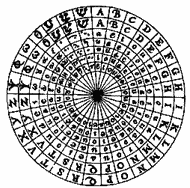

|
|
BRUNIAN PHILOSOPHY
The Infinity
of the Universe and the Infinity of God |
|
| |
|
Of the texts that most typify
Giordano Bruno's cosmology philosophy,
The Ash Wednesday Supper and On The
Infinite Universe and Worlds expand on his
anti-geocentric idea of an infinite universe and multiple worlds.
His visionary cosmology, which came barely
after Copernicus had outlined his theory on heliocentrism,
announced what was later to be Kepler's theory and the
fundamentals of modern astronomy.
|
|
|
| |
|
|
|
1 - Bruno's Crusade Against Medieval Aristotelianism
|
|
Giordano Bruno was a fervent defender of Neo-Platonism
against
the rationalist and empirical ideas of Aristotle. Bruno opposed
his natural philosophy and knowledge via the senses,
desperately trying to prove the absurdity expressed within. Bruno shocked the thinkers
of the era, who were still under the yoke
of a universal thought in conformity with the Christian idea,
and was quick to refute the Aristotelian conception of
a closed world, even though the Church
drew its explanation of the faith from this conception and did
not tolerate any deviation from the idea. It should not be
forgotten that this was a time when anything with a non-Aristotelian
outlook or tending to contradict the Aristotelian philosophy was
immediately branded heretical.
|
| |
| The official version describes the
Universe as a disc placed in the centre of a celestial sphere,
around which the sun revolves and where the moon and stars are
fixed. Man is God's only creature. Bruno's reply to this
precarious vision was
that "there are an infinite number of suns; an
infinite number of worlds revolve around these suns, just as the
seven planets revolve around our sun. These worlds are
inhabited by living beings". |
| |
|
2 -
The Infinity of Worlds and God |
|
Bruno stubbornly and audaciously
went on the attack, arguing that "he who denies
the infinite effect denies the infinite power".
|
| |
|
While Copernicus announced his
theory of heliocentrism, according to which the celestial spheres,
including the Earth, revolved around the sun, taken as
the centre of the universe, Bruno went even further. The philosopher
acknowledged the movement of the Earth, though whereas Copernicus spoke of the sphere
of fixed stars as being an unchanging and static
element, Bruno explained that it was an illusion created
by the rotation of our planet.
|
| |
|
Consequently, he refuted the idea of a finite cosmology,
to which Copernicus continued to adhere, and presented his conception
of an infinite universe. In a way, he removed any remaining Aristotelian
influence from Copernicus's theories and pushed heliocentrism as
far as the idea of infinite worlds where man was not
exclusive.
|
| |
|
He also
countered Christian geocentrism, which placed man in the
centre of the Universe, with an audacious relativism for
his time: "there is no top or bottom, no
absolute positioning in space. There are only positions that are
relative to the others. There is an incessant change in the
relative positions throughout the universe and the observer
is always at the centre".
|
| |
 |
 |
 |
|
| |
| 3
- The Animist Philosopher |
|
In respect of his theory on
infinite worlds, Bruno added the idea that nature was governed by
sprits. According to him, every thing,
object, animate or inanimate element was equipped with a soul:
"there is no reality that is not accompanied by
a spirit and an intelligence".
|
|
|
|
Bruno opposed
Aristotle's determinism and the Catholic conception by explaining
that the soul was an active and internal principle ensuring
harmony and that "it is the soul that governs,
moves, gives life, maintains and contains". In On Cause, Principle and
Unity, he added his idea of unity: "the soul of man and the soul of beasts are but one,
they only differ by their exterior dispositions". This soul, which
is identical and present in any every vital or non-vital
element, is the soul of the world that possesses its own
intellect and appears as the principle of nature.
|
| |
|
Against the
Aristotelian idea that matter can be divided until it
loses its reality, Bruno put forward the argument according to which
"the infinite world implies the existence of matter made
up of indivisible atoms".
|
| |
|
But that
is not all. Jacques Attali saw him as a true pioneer
of atomism, the ancestor of Mendeleïev and a
visionary of genetic science after reading what Bruno wrote in
1590: "there does
not need to be several sorts and forms of tiny
elements, furthermore nor letters to form innumerable species".
|
| |
| top
of page |